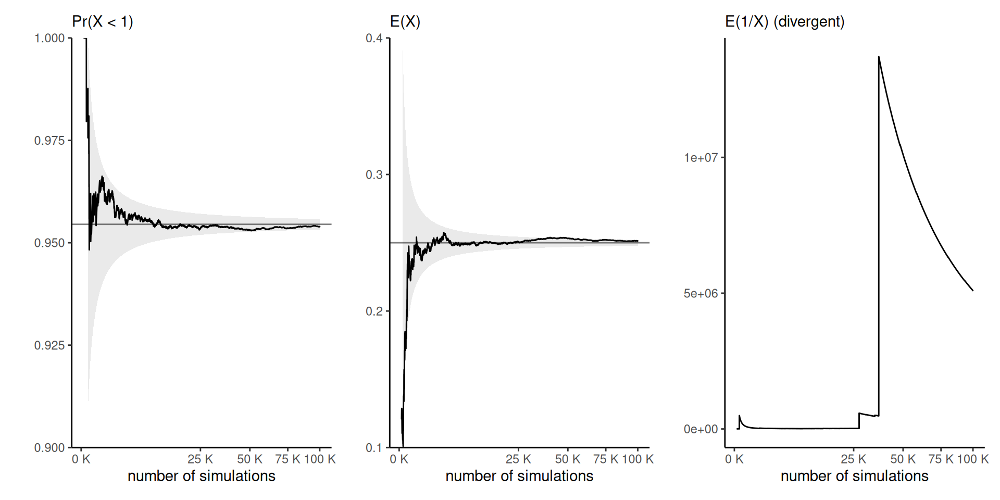
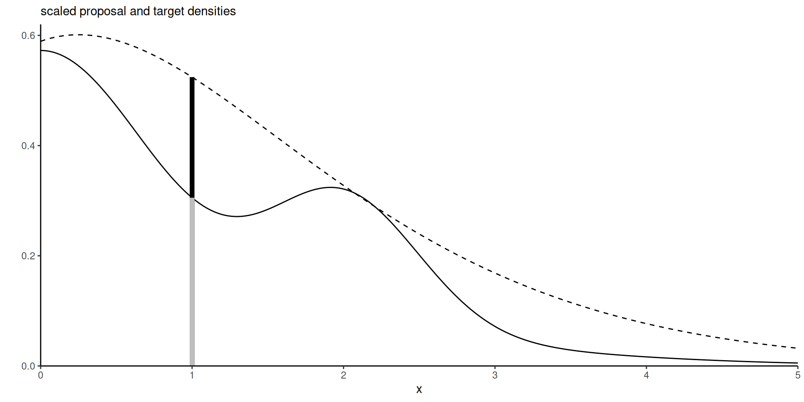

| \(Y_1=1\) | \(Y_1=2\) | \(Y_1=3\) | row total | |
|---|---|---|---|---|
| \(Y_2=1\) | 0.20 | 0.3 | 0.10 | 0.6 |
| \(Y_2=2\) | 0.15 | 0.2 | 0.05 | 0.4 |
| col. total | 0.35 | 0.5 | 0.15 | 1.0 |
Bayesian modelling
Introduction
Léo Belzile, HEC Montréal
2025
Distribution and density function
Let \(\boldsymbol{X} \in \mathbb{R}^d\) be a random vector with distribution function \[\begin{align*} F_{\boldsymbol{X}}(\boldsymbol{x}) = \Pr(\boldsymbol{X} \leq \boldsymbol{x}) = \Pr(X_1 \leq x_1, \ldots, X_d \leq x_d). \end{align*}\]
If the distribution of \(\boldsymbol{X}\) is absolutely continuous, \[\begin{align*} F_{\boldsymbol{X}}(\boldsymbol{x}) = \int_{-\infty}^{x_d} \cdots \int_{-\infty}^{x_1} f_{\boldsymbol{X}}(z_1, \ldots, z_d) \mathrm{d} z_1 \cdots \mathrm{d} z_d, \end{align*}\] where \(f_{\boldsymbol{X}}(\boldsymbol{x})\) is the joint density function.
Mass function
By abuse of notation, we denote the mass function in the discrete case \[0 \leq f_{\boldsymbol{X}}(\boldsymbol{x}) = \Pr(X_1 = x_1, \ldots, X_d = x_d) \leq 1.\]
The support is the set of non-zero density/probability total probability over all points in the support, \[\sum_{\boldsymbol{x} \in \mathsf{supp}(\boldsymbol{X})} f_{\boldsymbol{X}}(\boldsymbol{x}) = 1.\]
Marginal distribution
The marginal distribution of a subvector \(\boldsymbol{X}_{1:k}=(X_1, \ldots, X_k)^\top\) is \[\begin{align*} F_{\boldsymbol{X}_{1:k}}(\boldsymbol{x}_{1:k}) &= \Pr(\boldsymbol{X}_{1:k} \leq \boldsymbol{x}_{1:k}) \\&= F_{\boldsymbol{X}}(x_1, \ldots, x_k, \infty, \ldots, \infty). \end{align*}\]
Marginal density
The marginal density \(f_{\boldsymbol{X}_{1:k}}(\boldsymbol{x}_{1:k})\) of an absolutely continuous subvector \(\boldsymbol{X}_{1:k}=(X_1, \ldots, X_k)^\top\) is \[\begin{align*} \int_{-\infty}^\infty \cdots \int_{-\infty}^\infty f_{\boldsymbol{X}}(x_1, \ldots, x_k, z_{k+1}, \ldots, z_{d}) \mathrm{d} z_{k+1} \cdots \mathrm{d}z_d. \end{align*}\] through integration from the joint density.
Conditional distribution
The conditional distribution function of \(\boldsymbol{Y}\) given \(\boldsymbol{X}=\boldsymbol{x}\), is \[\begin{align*} f_{\boldsymbol{Y} \mid \boldsymbol{X}}(\boldsymbol{y}; \boldsymbol{x}) = \frac{f_{\boldsymbol{X}, \boldsymbol{Y}}(\boldsymbol{x}, \boldsymbol{y})}{f_{\boldsymbol{X}}(\boldsymbol{x})} \end{align*}\] for any value of \(\boldsymbol{x}\) in the support of \(\boldsymbol{X}\).
Conditional and marginal for contingency table
Consider a bivariate distribution for \((Y_1, Y_2)\) supported on \(\{1,2,3\} \times \{1, 2\}\) whose joint probability mass function is given in Table 1
Calculations for the marginal distribution
The marginal distribution of \(Y_1\) is obtain by looking at the total probability for each row/column, e.g., \[\Pr(Y_1=i) = \Pr(Y_1=i, Y_2=1)+ \Pr(Y_1=i, Y_2=2).\]
- \(\Pr(Y_1=1)=0.35\), \(\Pr(Y_1=2)=0.5\), \(\Pr(Y_1=3) = 0.15\).
- \(\Pr(Y_2=1)=0.6\) and \(\Pr(Y_2=2)=0.4\)
Conditional distribution
The conditional distribution \[\Pr(Y_2 = i \mid Y_1=2) = \frac{\Pr(Y_1=2, Y_2=i)}{\Pr(Y_1=2)},\] so \[\begin{align*} \Pr(Y_2 = 1 \mid Y_1=2) &= 0.3/0.5 = 0.6 \\ \Pr(Y_2=2 \mid Y_1=2) &= 0.4. \end{align*}\]
Independence
Vectors \(\boldsymbol{Y}\) and \(\boldsymbol{X}\) are independent if \[\begin{align*} F_{\boldsymbol{X}, \boldsymbol{Y}}(\boldsymbol{x}, \boldsymbol{y}) = F_{\boldsymbol{X}}(\boldsymbol{x})F_{\boldsymbol{Y}}(\boldsymbol{y}) \end{align*}\] for any value of \(\boldsymbol{x}\), \(\boldsymbol{y}\).
The joint density, if it exists, also factorizes \[\begin{align*} f_{\boldsymbol{X}, \boldsymbol{Y}}(\boldsymbol{x}, \boldsymbol{y}) = f_{\boldsymbol{X}}(\boldsymbol{x})f_{\boldsymbol{Y}}(\boldsymbol{y}). \end{align*}\]
If two subvectors \(\boldsymbol{X}\) and \(\boldsymbol{Y}\) are independent, then the conditional density \(f_{\boldsymbol{Y} \mid \boldsymbol{X}}(\boldsymbol{y}; \boldsymbol{x})\) equals the marginal \(f_{\boldsymbol{Y}}(\boldsymbol{y})\).
Law of iterated expectation and variance
Let \(\boldsymbol{Z}\) and \(\boldsymbol{Y}\) be random vectors. The expected value of \(\boldsymbol{Y}\) is \[\begin{align*} \mathsf{E}_{\boldsymbol{Y}}(\boldsymbol{Y}) = \mathsf{E}_{\boldsymbol{Z}}\left\{\mathsf{E}_{\boldsymbol{Y} \mid \boldsymbol{Z}}(\boldsymbol{Y})\right\}. \end{align*}\]
The tower property gives a law of iterated variance \[\begin{align*} \mathsf{Va}_{\boldsymbol{Y}}(\boldsymbol{Y}) = \mathsf{E}_{\boldsymbol{Z}}\left\{\mathsf{Va}_{\boldsymbol{Y} \mid \boldsymbol{Z}}(\boldsymbol{Y})\right\} + \mathsf{Va}_{\boldsymbol{Z}}\left\{\mathsf{E}_{\boldsymbol{Y} \mid \boldsymbol{Z}}(\boldsymbol{Y})\right\}. \end{align*}\]
Poisson distribution
The Poisson distribution has mass \[\begin{align*} f(x)=\mathsf{Pr}(Y=x) = \frac{\exp(-\lambda)\lambda^y}{\Gamma(y+1)}, \quad x=0, 1, 2, \ldots \end{align*}\] where \(\Gamma(\cdot)\) denotes the gamma function.
The parameter \(\lambda\) of the Poisson distribution is both the expectation and the variance of the distribution, meaning \[\mathsf{E}(Y)=\mathsf{Va}(Y)=\lambda.\]
Gamma distribution
A gamma distribution with shape \(\alpha>0\) and rate \(\beta>0\), denoted \(Y \sim \mathsf{gamma}(\alpha, \beta)\), has density \[\begin{align*} f(x) = \frac{\beta^\alpha}{\Gamma(\alpha)}x^{\alpha-1}\exp(-\beta x), \qquad x \in (0, \infty), \end{align*}\] where \(\Gamma(\alpha)=\int_0^\infty t^{\alpha-1}\exp(-t)\mathrm{d} t\) is the gamma function.
Poisson with random scale
To handle overdispersion in count data, take
\[\begin{align*} Y \mid \Lambda &= \lambda \sim \mathsf{Poisson}(\lambda)\\ \Lambda &\sim \mathsf{Gamma}(k\mu, k). \end{align*}\]
The joint density of \(Y\) and \(\Lambda\) on \(\mathbb{N}=\{0,1,\ldots\} \times \mathbb{R}_{+}\) is \[\begin{align*} f(y, \lambda) &= f(y \mid \lambda)f(\lambda) \\ &= \frac{\lambda^y\exp(-\lambda)}{\Gamma(y+1)} \frac{k^{k\mu}\lambda^{k\mu-1}\exp(-k\lambda)}{\Gamma(k\mu)} \end{align*}\]
Conditional distribution
The conditional distribution of \(\Lambda \mid Y=y\) can be found by considering only terms that are function of \(\lambda\), whence \[\begin{align*} f(\lambda \mid Y=y) \stackrel{\lambda}{\propto}\lambda^{y+k\mu-1}\exp\{-(k+1)\lambda\} \end{align*}\] so \(\Lambda \mid Y=y \sim \mathsf{gamma}(k\mu + y, k+1)\).
Marginal density of Poisson mean mixture
\[\begin{align*} f(y) &= \frac{f(y, \lambda)}{f(\lambda \mid y)} = \frac{\frac{\lambda^y\exp(-\lambda)}{\Gamma(y+1)} \frac{k^{k\mu}\lambda^{k\mu-1}\exp(-k\lambda)}{\Gamma(k\mu)}}{ \frac{(k+1)^{k\mu+y}\lambda^{k\mu+y-1}\exp\{-(k+1)\lambda\}}{\Gamma(k\mu+y)}}\\ &= \frac{\Gamma(k\mu+y)}{\Gamma(k\mu)\Gamma(y+1)}k^{k\mu} (k+1)^{-k\mu-y}\\&= \frac{\Gamma(k\mu+y)}{\Gamma(k\mu)\Gamma(y+1)}\left(1-\frac{1}{k+1}\right)^{k\mu} \left(\frac{1}{k+1}\right)^y \end{align*}\] Marginally, \(Y \sim \mathsf{neg. binom}(p)\) where \(p=(k+1)^{-1}.\)
Change of variable formula
Consider an injective (one-to-one) differentiable function \(\boldsymbol{g}: \mathbb{R}^d \to \mathbb{R}^d,\) with inverse \(g^{-1}.\) Then, if \(\boldsymbol{Y}=\boldsymbol{g}(\boldsymbol{X}),\) \[\begin{align*} \Pr(\boldsymbol{Y} \leq \boldsymbol{y}) = \Pr\{\boldsymbol{g}(\boldsymbol{X}) \leq \boldsymbol{y}\} = \Pr\{\boldsymbol{X} \leq \boldsymbol{x} = \boldsymbol{g}^{-1}(\boldsymbol{y})\}. \end{align*}\]
Using the chain rule, the density of \(\boldsymbol{Y}\) is \[\begin{align*} f_{\boldsymbol{Y}}(\boldsymbol{y}) = f_{\boldsymbol{X}}\left\{\boldsymbol{g}^{-1}(\boldsymbol{y})\right\} \left| \mathbf{J}_{\boldsymbol{g}^{-1}}(\boldsymbol{y})\right| = f_{\boldsymbol{X}}(\boldsymbol{x}) \left| \mathbf{J}_{\boldsymbol{g}}(\boldsymbol{x})\right|^{-1} \end{align*}\] where \(\mathbf{J}_{\boldsymbol{g}}(\boldsymbol{x})\) is the Jacobian matrix with \(i,j\)th element \(\partial [\boldsymbol{g}(\boldsymbol{x})]_i / \partial x_j.\)
Gaussian location-scale
Consider \(d\) independent standard Gaussian variates \(X_j \sim \mathsf{Gauss}(0, \sigma^2)\) for \(j=1, \ldots, d,\) with joint density function \[\begin{align*} f_{\boldsymbol{X}}(\boldsymbol{x})= (2\pi)^{-d/2} \exp \left( - \frac{\boldsymbol{x}^\top\boldsymbol{x}}{2}\right). \end{align*}\] Consider the transformation \(\boldsymbol{Y} = \mathbf{A}\boldsymbol{X}+\boldsymbol{b},\) with \(\mathbf{A}\) an invertible matrix.
Change of variable for Gaussian
- The inverse transformation is \(\boldsymbol{g}^{-1}(\boldsymbol{y}) = \mathbf{A}^{-1}(\boldsymbol{y}-\boldsymbol{b}).\)
- The Jacobian \(\mathbf{J}_{\boldsymbol{g}}(\boldsymbol{x})\) is simply \(\mathbf{A},\) so the joint density of \(\boldsymbol{Y}\) is \[\begin{align*} (2\pi)^{-d/2} |\mathbf{A}|^{-1}\exp \left\{ - \frac{(\boldsymbol{y}-\boldsymbol{b})^\top\mathbf{A}^{-\top}\mathbf{A}^{-1}(\boldsymbol{y}-\boldsymbol{b})}{2}\right\}. \end{align*}\] Since \(|\mathbf{A}^{-1}| = |\mathbf{A}|^{-1}\) and \(\mathbf{A}^{-\top}\mathbf{A}^{-1} = (\mathbf{AA}^\top)^{-1},\) we recover \(\boldsymbol{Y} \sim \mathsf{Gauss}_d(\boldsymbol{b}, \mathbf{AA}^\top).\)
Partitioning of covariance matrices
Let \(\boldsymbol{\Sigma}\) be a \(d \times d\) positive definite covariance matrix. We define the precision matrix \(\boldsymbol{Q} = \boldsymbol{\Sigma}^{-1}.\) Suppose the matrices are partitioned into blocks, \[\begin{align*} \boldsymbol{\Sigma}= \begin{pmatrix} \boldsymbol{\Sigma}_{11} & \boldsymbol{\Sigma}_{12} \\ \boldsymbol{\Sigma}_{21} & \boldsymbol{\Sigma}_{22} \end{pmatrix} \text{ and } \boldsymbol{\Sigma}^{-1}= \boldsymbol{Q} = \begin{pmatrix} \boldsymbol{Q}_{11} &\boldsymbol{Q}_{12} \\ \boldsymbol{Q}_{21} & \boldsymbol{Q}_{22} \end{pmatrix} \end{align*}\] with \(\dim(\boldsymbol{\Sigma}_{11})=k\times k\) and \(\dim(\boldsymbol{\Sigma}_{22})=(d-k) \times (d-k).\)
Matrix identities
The following relationships hold:
- \(\boldsymbol{\Sigma}_{12}\boldsymbol{\Sigma}_{22}^{-1}=-\boldsymbol{Q}_{11}^{-1}\boldsymbol{Q}_{12}\)
- \(\boldsymbol{\Sigma}_{11}-\boldsymbol{\Sigma}_{12}\boldsymbol{\Sigma}_{22}^{-1}\boldsymbol{\Sigma}_{21}=\boldsymbol{Q}_{11}^{-1}\)
- \(\det(\boldsymbol{\Sigma})=\det(\boldsymbol{\Sigma}_{22})\det(\boldsymbol{\Sigma}_{1|2})\) where \(\boldsymbol{\Sigma}_{1|2}=\boldsymbol{\Sigma}_{11}-\boldsymbol{\Sigma}_{12}\boldsymbol{\Sigma}_{22}^{-1}\boldsymbol{\Sigma}_{21}.\)
Gaussian subvectors
Let \(\boldsymbol{Y} \sim \mathsf{Gauss}_d(\boldsymbol{\mu}, \boldsymbol{\Sigma})\) and consider the partition \[\begin{align*} \boldsymbol{Y} = \begin{pmatrix} \boldsymbol{Y}_1 \\ \boldsymbol{Y}_2\end{pmatrix}, \quad \boldsymbol{\mu} = \begin{pmatrix} \boldsymbol{\mu}_1 \\ \boldsymbol{\mu}_2\end{pmatrix}, \quad \boldsymbol{\Sigma} = \begin{pmatrix} \boldsymbol{\Sigma}_{11} & \boldsymbol{\Sigma}_{12}\\ \boldsymbol{\Sigma}_{21} & \boldsymbol{\Sigma}_{22}\end{pmatrix}, \end{align*}\] where \(\boldsymbol{Y}_1\) is a \(k \times 1\) and \(\boldsymbol{Y}_2\) is a \((d-k) \times 1\) vector for some \(1\leq k < d.\)
Conditional distribution of Gaussian vectors
Then, we have the conditional distribution \[\begin{align*} \boldsymbol{Y}_1 \mid \boldsymbol{Y}_2 =\boldsymbol{y}_2 &\sim \mathsf{Gauss}_k(\boldsymbol{\mu}_1+\boldsymbol{\Sigma}_{12} \boldsymbol{\Sigma}_{22}^{-1}(\boldsymbol{y}_2-\boldsymbol{\mu}_2), \boldsymbol{\Sigma}_{1|2}) \\& \sim \mathsf{Gauss}_k(\boldsymbol{\mu}_1-\boldsymbol{Q}_{11}^{-1}\boldsymbol{Q}_{12}(\boldsymbol{y}_2-\boldsymbol{\mu}_2), \boldsymbol{Q}^{-1}_{11}) \end{align*}\] and \(\boldsymbol{\Sigma}_{1|2}=\boldsymbol{\Sigma}_{11}-\boldsymbol{\Sigma}_{12}\boldsymbol{\Sigma}_{22}^{-1}\boldsymbol{\Sigma}_{21}\) is the Schur complement of \(\boldsymbol{\Sigma}_{22}.\)
Likelihood
The likelihood \(L(\boldsymbol{\theta})\) is a function of the parameter vector \(\boldsymbol{\theta}\) that gives the ‘density’ of a sample under a postulated distribution, treating the observations as fixed, \[\begin{align*} L(\boldsymbol{\theta}; \boldsymbol{y}) = f(\boldsymbol{y}; \boldsymbol{\theta}). \end{align*}\]
Likelihood for independent observations
If the joint density factorizes, \[\begin{align*} L(\boldsymbol{\theta}; \boldsymbol{y})=\prod_{i=1}^n f_i(y_i; \boldsymbol{\theta}) = f_1(y_1; \boldsymbol{\theta}) \times \cdots \times f_n(y_n; \boldsymbol{\theta}). \end{align*}\] The corresponding log likelihood function for independent and identically distributions observations is \[\begin{align*} \ell(\boldsymbol{\theta}; \boldsymbol{y}) = \sum_{i=1}^n \ln f(y_i; \boldsymbol{\theta}) \end{align*}\]
Score
Let \(\ell(\boldsymbol{\theta}),\) \(\boldsymbol{\theta} \in \boldsymbol{\Theta} \subseteq \mathbb{R}^p,\) be the log likelihood function. The gradient of the log likelihood, termed score is the \(p\)-vector \[U(\boldsymbol{\theta}) = \frac{\partial \ell(\boldsymbol{\theta})}{ \partial \boldsymbol{\theta}}.\]
Information matrix
The observed information matrix is the hessian of the negative log likelihood, \[\begin{align*} j(\boldsymbol{\theta}; \boldsymbol{y})=-\frac{\partial^2 \ell(\boldsymbol{\theta}; \boldsymbol{y})}{\partial \boldsymbol{\theta} \partial \boldsymbol{\theta}^\top}, \end{align*}\] evaluated at the maximum likelihood estimate \(\widehat{\boldsymbol{\theta}},\) so \(j(\widehat{\boldsymbol{\theta}}).\)
Expected information
Under regularity conditions, the expected information, also called Fisher information matrix, is \[\begin{align*} i(\boldsymbol{\theta}) = \mathsf{E}\left\{U(\boldsymbol{\theta}; \boldsymbol{Y}) U(\boldsymbol{\theta}; \boldsymbol{Y})^\top\right\} = \mathsf{E}\left\{j(\boldsymbol{\theta}; \boldsymbol{Y})\right\} \end{align*}\]
Note on information matrices
Information matrices are symmetric and provide information about the variability of \(\widehat{\boldsymbol{\theta}}.\)
The information of an iid sample of size \(n\)is \(n\) times that of a single observation
- information accumulates at a linear rate.
Example: random right-censoring
Consider a survival analysis problem for independent time-to-event data subject to (noninformative) random right-censoring. We observe
- failure times \(Y_i (i=1, \ldots, n)\) drawn from \(F(\cdot; \boldsymbol{\theta})\) supported on \((0, \infty)\)
- independent binary censoring indicators \(C_i \in \{0,1\}\), with \(0\) indicating right-censoring and \(C_i=1\) observed failure time.
Likelihood contribution with censoring
If individual observation \(i\) has not experienced the event at the end of the collection period, then the likelihood contribution is \(\Pr(Y > y) = 1-F(y; \boldsymbol{\theta})\), where \(y_i\) is the maximum time observed for \(Y_i\). We write the log likelihood \[\begin{align*} \ell(\boldsymbol{\theta}) = \sum_{i: c_i=0} \log \{1- F(y_i; \boldsymbol{\theta})\} + \sum_{i: c_i=1} \log f(y_i; \boldsymbol{\theta}) \end{align*}\]
Censoring and exponential data
Suppose for simplicity that \(Y_i \sim \mathsf{expo}(\lambda)\) and let \(m=c_1 + \cdots + c_n\) denote the number of observed failure times. Then, the log likelihood and the Fisher information are \[\begin{align*} \ell(\lambda) &= \lambda \sum_{i=1}^n y_i + \log \lambda m\\ i(\lambda) &= m/\lambda^2 \end{align*}\] and the right-censored observations for the exponential model do not contribute to the information.
Information for the Gaussian distribution
Consider \(Y \sim \mathsf{Gauss}(\mu, \tau^{-1})\), parametrized in terms of precision \(\tau\). The likelihood contribution for an \(n\) sample is, up to proportionality, \[\begin{align*} \ell(\mu, \tau) \propto \frac{n}{2}\log(\tau) - \frac{\tau}{2}\sum_{i=1}^n(Y_i^2-2\mu Y_i+\mu^2) \end{align*}\]
Gaussian information matrices
The observed and Fisher information matrices are \[\begin{align*} j(\mu, \tau) &= \begin{pmatrix} n\tau & -\sum_{i=1}^n (Y_i-\mu)\\ -\sum_{i=1}^n (Y_i-\mu) & \frac{n}{2\tau^2} \end{pmatrix}, \\ i(\mu, \tau) &= n\begin{pmatrix} \tau & 0\\ 0 & \frac{1}{2\tau^2} \end{pmatrix} \end{align*}\] Since \(\mathsf{E}(Y_i) = \mu\), the expected value of the off-diagonal entries of the Fisher information matrix are zero.
Example: first-order autoregressive process
Consider an \(\mathsf{AR}(1)\) model of the form \[Y_t = \mu + \phi(Y_{t-1} - \mu) + \varepsilon_t,\] where
- \(\phi\) is the lag-one correlation,
- \(\mu\) the global mean and
- \(\varepsilon_t\) is an iid innovation with mean zero and variance \(\sigma^2\).
If \(|\phi| < 1\), the process is stationary, and the variance does not increase with \(t\).
Markov property and likelihood decomposition
The Markov property states that the current realization depends on the past, \(Y_t \mid Y_1, \ldots, Y_{t-1},\) only through the most recent value \(Y_{t-1}.\) The log likelihood thus becomes \[\begin{align*} \ell(\boldsymbol{\theta}) = \ln f(y_1) + \sum_{i=2}^n f(y_i \mid y_{i-1}). \end{align*}\]
Marginal of AR(1)
The \(\mathsf{AR}(1)\) stationarity process has unconditional moments \[\mathsf{E}(Y_t) = \mu, \qquad \mathsf{Var}(Y_t)=\sigma^2/(1-\phi^2).\]
The \(\mathsf{AR}(1)\) process is first-order Markov since the conditional distribution \(f(Y_t \mid Y_{t-1}, \ldots, Y_{t-p})\) equals \(f(Y_t \mid Y_{t-1})\).
Log likelihood of AR(1)
If innovations are Gaussian, we have \[Y_t \mid Y_{t-1}=y_{t-1} \sim \mathsf{Gauss}\{\mu(1-\phi)+ \phi y_{t-1}, \sigma^2\}, \qquad t>1.\] so the log-likelihood is \[\begin{align*} &\ell(\mu, \phi,\sigma^2)= -\frac{n}{2}\log(2\pi) - n\log \sigma + \frac{1}{2}\log(1-\phi^2) \\&\quad -\frac{(1-\phi^2)(y_1- \mu)^2}{2\sigma^2} - \sum_{i=2}^n \frac{(y_t - \mu(1-\phi)- \phi y_{t-1})^2}{2\sigma^2} \end{align*}\]
Moments
By the laws of iterated expectation and iterative variance, \[\begin{align*} \mathsf{E}(Y) &= \mathsf{E}_{\Lambda}\{\mathsf{E}(Y \mid \Lambda\} \\& = \mathsf{E}(\Lambda) = \mu\\ \mathsf{Va}(Y) &= \mathsf{E}_{\Lambda}\{\mathsf{Va}(Y \mid \Lambda)\} + \mathsf{Va}_{\Lambda}\{\mathsf{E}(Y \mid \Lambda)\} \\&= \mathsf{E}(\Lambda) + \mathsf{Va}(\Lambda) \\&= \mu + \mu/k. \end{align*}\] The marginal distribution of \(Y\), unconditionally, has a variance which exceeds its mean.
Estimation of integrals
Suppose we can simulate \(B\) i.i.d. variables with the same distribution, \(x_1, \ldots, x_B\) with distribution \(F\).
We want to compute \(\mathsf{E}\{g(X)\}=\int g(x) f(x) \mathrm{d} x=\mu_g\) for some functional \(g(\cdot)\)
- \(g(x)=x\) (posterior mean)
- \(g(x) = \mathsf{I}(x \in A)\) (probability of event)
- etc.
Vanilla Monte Carlo integration
We substitute expected value by sample average of \[\begin{align*} \widehat{\mu}_g = \frac{1}{B} \sum_{b=1}^B g(x_b). \end{align*}\]
- law of large number guarantees convergence of \(\widehat{\mu}_g \to \mu_g\) if the latter is finite.
- Under finite second moments, central limit theorem gives \[\sqrt{B}(\widehat{\mu}_g - \mu_g) \sim \mathsf{No}(0, \sigma^2_g).\]
Importance sampling
Consider density \(q\) instead with \(\mathrm{supp}(p) \subseteq \mathrm{supp}(q).\) Then, \[\begin{align*} \mathsf{E}\{g(X)\} = \int_{\mathcal{X}} g(x) \frac{p(x)}{q(x)} q(x) \mathrm{d} x \end{align*}\] and we can proceed similarly by drawing samples from \(q\).
Importance sampling estimator
An alternative Monte Carlo estimator uses the weighted average \[\begin{align*} \widetilde{\mathsf{E}}\{g(X)\} =\frac{B^{-1} \sum_{b=1}^B w_b g(x_b) }{B^{-1}\sum_{b=1}^B w_b}. \end{align*}\] with weights \(w_b = p(x_b)/q(x_b)\). The latter equal 1 on average, so one could omit the denominator without harm.
Standard errors
If the variance of \(g(X)\) is finite, we can approximate the latter by the sample variance of the simple random sample and obtain the Monte Carlo standard error of the estimator \[\begin{align*} \mathsf{se}^2[\widehat{\mathsf{E}}\{g(X)\}] = \frac{1}{B(B-1)} \sum_{b=1}^B \left[ g(x_b) - \widehat{\mathsf{E}}\{g(X)\} \right]^2. \end{align*}\]
Precision of Monte Carlo integration
We want to have an estimator as precise as possible.
- but we can’t control the variance of \(g(X)\), say \(\sigma_g^2\)
- the more simulations \(B\), the lower the variance of the mean.
- sample average for i.i.d. data has variance \(\sigma^2_g/B\)
- to reduce the standard deviation by a factor 10, we need \(100\) times more draws!
Remember: the answer is random.
Example: functionals of gamma distribution
Figure 1: Running mean trace plots for \(g(x)=\mathrm{I}(x<1)\) (left), \(g(x)=x\) (middle) and \(g(x)=1/x\) (right) for a Gamma distribution with shape 0.5 and rate 2, as a function of the Monte Carlo sample size.
Simulation algorithms: inversion method
If \(F\) is an absolutely continuous distribution function, then \[F(X) \sim \mathsf{U}(0,1).\] The inversion method consists in applying the quantile function \(F^{-1}\) to \(U \sim \mathsf{U}(0,1)\), viz. \[F^{-1}(U) \sim X.\]
Inversion method for truncated distributions
Consider a random variable \(Y\) with distribution function \(F\).
If \(X\) follows the same distribution as \(Y\), but restricted over the interval \([a,b]\), then \[\Pr(X \leq x) = \frac{F(x) - F(a)}{F(b)-F(a)}, \qquad a \leq x \leq b,\]
Therefore, \[F^{-1}[F(a) + \{F(b)-F(a)\}U] \sim X\]
Simulation algorithms: accept-reject
- Target: sample from density \(p(x)\) (hard to sample from)
- Proposal: find a density \(q(x)\) with nested support, \(\mathrm{supp}(p) \subseteq \mathrm{supp}(q)\), such that \[\frac{p(x)}{q(x)} \leq C, \quad C \geq 1.\]
Rejection sampling algorithm
- Generate \(X\) from proposal with density \(q(x)\).
- Compute the ratio \(R \gets p(X)/ q(X)\).
- If \(CU \leq R\) for \(U \sim \mathsf{U}(0,1)\), return \(X\), else go back to step 1.
Remarks on rejection sampling
- Acceptance rate is \(1/C\)
- we need on average \(C\) draws from \(q\) to get one from \(p\)
- \(q\) must be more heavy-tailed than \(p\)
- e.g., \(q(x)\) Student-\(t\) for \(p(x)\) Gaussian
- \(q\) should be cheap and easy to sample from!
Designing a good proposal density
Good choices must satisfy the following constraints:
- pick a family \(q(x)\) so that \[C = \mathrm{sup}_x \frac{p(x)}{q(x)}\] is as close to 1 as possible.
- you can use numerical optimization with \(f(x) =\log p(x) - \log q(x)\) to find the mode \(x^\star\) and the upper bound \(C = \exp f(x^\star)\).
Accept-reject illustration
Figure 2: Target density (full) and scaled proposal density (dashed): the vertical segment at \(x=1\) shows the percentage of acceptance for a uniform slice under the scaled proposal, giving an acceptance ratio of 0.58.
Truncated Gaussian via accept-reject
Consider sampling \(Y \sim \mathsf{No}(\mu, \sigma^2)\), but truncated in the interval \((a, b)\). The target density is \[\begin{align*} p(x; \mu, \sigma, a, b) = \frac{1}{\sigma}\frac{\phi\left(\frac{x-\mu}{\sigma}\right)}{\Phi(\beta)-\Phi(\alpha)}. \end{align*}\] for \(\alpha= (a-\mu)/\sigma\) and \(\beta = (b-\mu)/\sigma\). where \(\phi(\cdot), \Phi(\cdot)\) are respectively the density and distribution function of the standard Gaussian distribution.
Accept-reject (crude version)
- Simulate \(X \sim \mathsf{No}(\mu, \sigma^2)\)
- reject any draw if \(X < a\) or \(X> b\).
The acceptance rate is \(C^{-1} = \{\Phi(\beta) - \Phi(\alpha)\}\)
Accept-reject for truncated Gaussian
Since the Gaussian is a location scale family, the inversion method gives \[\begin{align*} X \sim \mu + \sigma\Phi^{-1}\left[\Phi(\alpha) + \{\Phi(\beta)-\Phi(\alpha)\}U\right] \end{align*}\]
We however need to evaluate \(\Phi\) numerically (no closed-form expression).
The method fails for rare event simulation because the computer returns
- \(\Phi(x) = 0\) for \(x \leq -39\)
- \(\Phi(x)=1\) for \(x \geq 8.3\),
implying that \(a \leq 8.3\) for this approach to work (Botev & L’Écuyer, 2017).
Simulating tails of Gaussian variables
We consider simulation from a standard Gaussian truncated above \(a>0\)
Write the density of the truncated Gaussian as (Devroye, 1986, p. 381)\[f(x) = \frac{\exp(-x^2/2)}{\int_{a}^{\infty}\exp(-z^2/2)\mathrm{d} z} =\frac{\exp(-x^2/2)}{c_1}.\]
Note that, for \(x \geq a\), \[c_1f(x) \leq \frac{x}{a}\exp\left(-\frac{x^2}{2}\right)= a^{-1}\exp\left(-\frac{a^2}{2}\right)g(x);\] where \(g(x)\) is the density of a Rayleigh variable shifted by \(a\).1
Accept-reject: truncated Gaussian with Rayleigh
The shifted Rayleigh has distribution function \[G(x) = 1-\exp\{(a^2-x^2)/2\}, x \geq a.\]
Marsaglia algorithm
- Generate a shifted Rayleigh above \(a\), \(X \gets \{a^2 - 2\log(U)\}^{1/2}\) for \(U \sim \mathsf{U}(0,1)\)
- Accept \(X\) if \(XV \leq a\), where \(V \sim \mathsf{U}(0,1)\).
For sampling on \([a,b]\), propose from a Rayleigh truncated above at \(b\) (Botev & L’Écuyer, 2017).
References
Botev, Z., & L’Écuyer, P. (2017). Simulation from the normal distribution truncated to an interval in the tail. Proceedings of the 10th EAI International Conference on Performance Evaluation Methodologies and Tools on 10th EAI International Conference on Performance Evaluation Methodologies and Tools, 23–29. https://doi.org/10.4108/eai.25-10-2016.2266879
Devroye, L. (1986). Non-Uniform Random Variate Generation. Springer. http://www.nrbook.com/devroye/